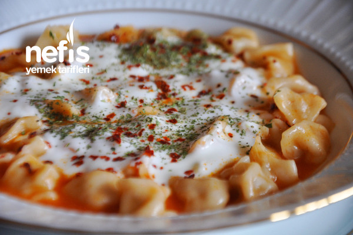
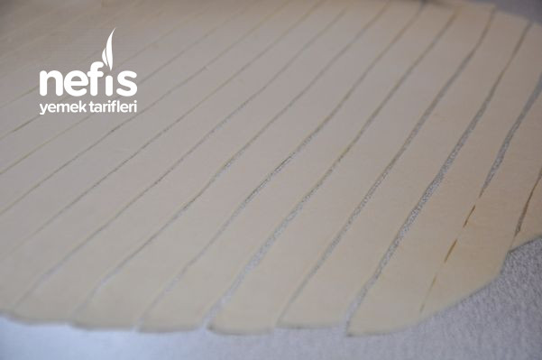
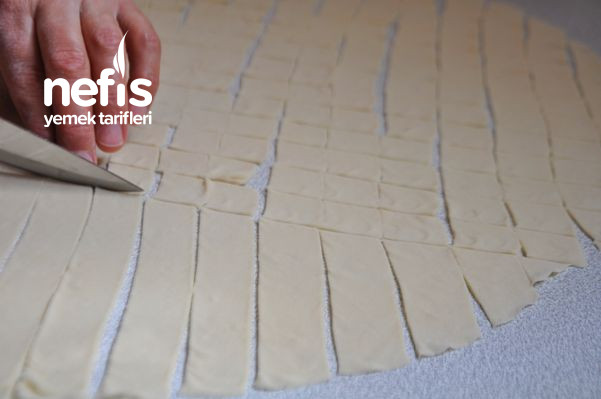

Manti Tarifi
Manti tarifi icin malzemeler
- 3 su bardagi un
- 1 su bardagi ilik su
- tuz
- 1 adet yumurta

Ici icin:
- 250g az yagli kiyma
- 1 adet orta boy sogan
- Karabiber
- Pul biber
- Tuz
Pisirmek icin:
- Tereyagi
- 2 yemek kasigi salca
Uzeri icin:
- Sarimsakli yogurt
- Nane
- Sumak
- Pul biber

Manti nasil yapilir
- Genişçe bir kapta unun ortasını açın, yumurtayı kırın, bir tutam tuz serpin ve azar azar su ilave ederek hamuru yoğurun.
- Hamurun ne çok kaskatı ne de çok yumuşak olmalıdır.
- Hamurdan bezeler yaparak, bunları teker teker, hazır yufkadan daha kalınca olarak açın.
- Diğer taraftan kıymanı içine kırmızıbiber, karabiber, tuz ve rendelemiş olduğunuz soğanı ekleyerek biraz yoğurun.
- Kıymadan kopardığınız küçük parçaları kare kare kesmiş olduğunuz hamurun üzerine koyun.
- Hamurların 4 köşesini bir araya getirip şekillendirin.
- Mantılar hazır olunca kaynayan suya atarak 15-20dk kadar pişirin.
- Bu arada küçük bir tavada tereyağını eriyip salçayı kavurun.
- Pişmekte olan mantının suyuna ilave edin.
- 5 dk kadar daha pişirdikten sonra ocaktan alın
- Mantıyı tabaklara koyun üzerine sarımsaklı yoğurt dökün.
- Nane ve bol sumak serperek servis edebilirsiniz.
- Dilerseniz pulbiber de kullanabilirsiniz. Afiyet olsun.